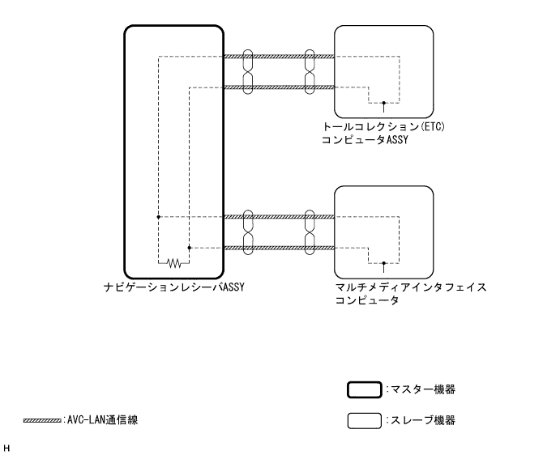

CAN Communication System
The back guide monitor system uses CAN communication for data communication between the navigation receiver assembly and each ECU.
If there is a problem in the CAN communication line, the navigation receiver assembly outputs a CAN communication malfunction DTC. (Check using the TaSCAN diagnostic tool screen and the navigation receiver assembly diagnosis screen) (see
 、)
、)If a CAN communication malfunction code is output, repair the communication line malfunction, and troubleshoot the back guide monitor system with data communication in a normal condition. (see
) Each CAN communication line has a specified length and routing, and temporary measures or repairs using bypass wiring, etc. cannot be performed. (see
)
AVC - LAN Communication System

The back guide monitor system uses AVC - LAN for communication between components.
The master component of the AVC - LAN is the navigation receiver assembly.
The navigation receiver assembly contains a resistor necessary for communication transmission (60 to 80 Ω between terminals TX+ and TX-).
If a malfunction such as a short in the communication line, short to +B or short to GND occurs in the AVC - LAN circuit, communication is interrupted, and the back guide monitor system and HDD navigation system do not operate normally.